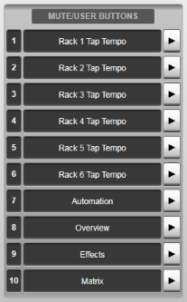

The Options can be found in MENU > Setup > Options.
The following pages detail the settings in each Options tab:
CONSOLE Options
SYSTEM Options
SURFACE Options
USER Options
USER KEYS Options (this page)
REMOTE Options
NETWORK Options
DAW Options
External Control Options
User Key Options
These settings relate to the various user-assignable keys available on the console surface.
User Keys Options are found in MENU > Setup > Options > USER KEYS tab.
There are several groups of User Keys that can be assigned to various functions for quick access. These are:
- Keypad Keys : Ten numeric keypad buttons located on the Master Tile (also accessible from the Control Tile screen, if fitted)
- Mute/User Keys : The ten Mute Group Master keys on the Master Tile can be toggled to User Keys using the MODE key (also accessible from the Control Tile screen, if fitted)
- Channel View Popout : Sixteen virtual User Keys located in a popout accessed from the main screen Channel View sidebar

Use the button to the right of each user key field to select a function from the list available (included below).
A full list of User Keys functions available is included below:
| Menu Select | Channel View | Channel View to main screen*1 | ||
|---|---|---|---|---|
| Automation | Automation page to main screen*1 | |||
| Overview | Overview page to main screen*1 | |||
| Effects | Effects Rack page to main screen*1 | |||
| Matrix | Matrix page to main screen*1 | |||
| Screen Query | Screen Query to main screen*1 | |||
| Setup | Options | Console | Console options tab to main screen*1 | |
| System | System options tab to main screen*1 | |||
| Surface | Surface options tab to main screen*1 | |||
| User | User options tab to main screen*1 | |||
| User Keys | User Key options tab to main screen*1 | |||
| Remote | Remote options tab to main screen*1 | |||
| Network | Network options tab to main screen*1 | |||
| DAW | DAW Control options tab to main screen*1 | |||
| External Control | External Control options tab to main screen*1 | |||
| Console Configuration | Console Configuration page to main screen*1 | |||
| Layer Manager | Layer Manager page to main screen*1 | |||
| I/O | I/O page to main screen*1 | |||
| XY Routing | XY Routing to main screen*1 | |||
| File Manager | Showfiles | Showfiles page to main screen*1 | ||
| Patch Manager | Patch Manager page to main screen*1 | |||
| Presets | Presets page to main screen*1 | |||
| Tools | Talkback Groups | Talkback Groups page to main screen*1 | ||
| Signal Switcher | Signal Switcher page to main screen*1 | |||
| Event Manager | Event Manager page to main screen*1 | |||
| Console Functions | Solo Setup | SIP | Toggle Solo In Place mode on/off | |
| Additive Solo A | Toggle Additive Solo mode for Solo bus A on/off | |||
| Additive Solo B | Toggle Additive Solo mode for Solo bus B on/off | |||
| Solo A Default Feed Point | None | Change default feed point of Solo Bus A to None (no send) | ||
| Pre Fader | Change default feed point of Solo Bus A to Pre Fader | |||
| Post All | Change default feed point of Solo Bus A to Post All | |||
| Toggle Pre/Post | Toggle the default feed point of Solo Bus A between Pre Fader and Post All | |||
| Solo B Default Feed Point | None | Change default feed point of Solo Bus B to None (no send) | ||
| Pre Fader | Change default feed point of Solo Bus B to Pre Fader | |||
| Post All | Change default feed point of Solo Bus B to Post All | |||
| Toggle Pre/Post | Toggle the default feed point of Solo Bus B between Pre Fader and Post All | |||
| Tile Setup | Screen Follow Select | Toggle Screen Follow Select mode on/off | ||
| Link Control Tile | Toggle Link Control Tile mode on/off when Focus Fader is locked | |||
| Query to Focus Fader | Toggle Query to Focus Fader mode on/off | |||
| Lock To User Keys | Toggle keypad Lock the Keypad to User Keys on/off | |||
| Path Label LCD | Show Info | Set Path Label LCDs to display path info | ||
| Show Solo | Set Path Label LCDs to display Solo bus info | |||
| Follow Setup | Follow Mode On/Off | Toggle Select/Solo/Query Follow Modes on/off | ||
| External Screen | Overview | Set External Screen to Overview page | ||
| Automation | Set External Screen to Automation page | |||
| Rehearse Mode | Global | Toggle Global Rehearse Mode on/off*2 | ||
| 1 - 8 | Toggle Rehearse Mode on/off for Live Recorder N | |||
| Surface Lock | Engage Control Surface Lock*2 | |||
| Effects | Tempo Link | Rack 1 - 6 | Tap Tempo (Tempo Link) for Rack N | |
| Automation | Fire Scene | Scene N | Fire scene N from the Automation list | |
| Scene Name | Rename the selected scene | |||
| Group Mode | Toggle Group Mode states (Group Mode/Group All/Disabled) | |||
| Showfile | Save | Save over the current showfile*2 | ||
| Save As | Save the current show as a new showfile | |||
| Auto Mute Safe | Engage Auto Mute Safe | |||
| Temporary Auto Mute Safe | Engage Temporary Auto Mute Safe | |||
| Signal Switchers | Signal Switcher 1 - 4 | Input B | Toggle to Input B of selected Signal Switcher | |
| Clear Query | Clear a Query | |||
| Talkback Groups | Group 1-10 IN | Enable talkback to TB Group N*3 | ||
| Channel View Edit Safe Mode | Engage Channel View Edit Safe Mode | |||
| IO Functions | Recalibrate All | Recalibrate all Owned inputs across all connected Net I/O stageboxes*2 | ||
| Path Functions | Selected Path | Input A/B Toggle (Channels only) | Toggle Selected Channel between Inputs A & B*2 | |
| Path Global Recall Safe | Enable Global Recall Safe for the Selected path*2 | |||
| Channel / Stem / Aux / Master / Matrix / Talkback / Solo Chan / VCA N |
Path Select | Select Path N (abides by Follow Modes) | ||
| Mute | Toggle Path N Mute state | |||
| Input Select (Channels only) | Input A | Switch Channel N to Input A*2 | ||
| Input B | Switch Channel N to Input B*2 | |||
| Input A/B Toggle | Toggle Channel N between Inputs A & B*2 | |||
| Insert A IN (not VCAs) | Toggle Path N Insert A IN state | |||
| Insert B IN (not VCAs) | Toggle Path N Insert B IN state | |||
| TB IN (Stems/Auxes/Masters only) | Talkback to Stem/Aux/Master N*3 | |||
| Quick Controls | Routing | Input | Input | Switch Quick Controls to last selected Input section |
| Mic Gain | Switch Quick Controls to control Mic Gain directly | |||
| Fader/TB | Fader/TB | Switch Quick Controls to last selected Fader/TB section | ||
| Talkback | Switch Quick Controls to Talkback section directly | |||
| Mute Groups | Switch Quick Controls to last selected Mute Groups section | |||
| VCA | Switch Quick Controls to last selected VCA section | |||
| Master | Switch Quick Controls to last selected Master section | |||
| Stem | Switch Quick Controls to last selected Stem section | |||
| Aux | Switch Quick Controls to last selected Aux section | |||
| Processing | EQ | Switch Quick Controls to last selected EQ section | ||
| Dynamics | Switch Quick Controls to last selected Dynamics section | |||
| Pan | Switch Quick Controls to last selected Pan section | |||
| Time | Switch Quick Controls to last selected Time (Delay & All Pass) section | |||
| Insert A | Switch Quick Controls to Insert A section | |||
| Insert B | Switch Quick Controls to Insert B section | |||
| Config | Switch Quick Controls to Config section | |||
| FX Slot Select | Rack 1-6 | Slot 1-16 | Switch main screen to the selected FX rack slot | |
| Mute Group Masters | MG Master 1-10 | Toggle Mute Group Master N | ||
| DAW | Refer to separate table below. | |||
| Event Select | [Name of Event] | Trigger the User Key source of the Event specified. | ||
|
*1 Second press reverts to previous screen *2 Press and hold to activate *3 Short press for latching, long press for momentary operation |
||||
A full list of User Keys available for DAW control is included below:
| DAW 1 - 4 | Strip Master Switches | Select - Assign | Send A - E |
|---|---|---|---|
| Pan | |||
| Mute | |||
| Flip | |||
| Global | Suspend | ||
| Rec/Rdy All | |||
| Misc | Default | ||
| Fader Banks | Bank Down / Up | ||
| Channel Down / Up | |||
| Window | Transport | ||
| Edit | |||
| Mix | |||
| Alt | |||
| Mem-Loc | |||
| Master Section | Keyboard Shortcuts | Undo | |
| Save | |||
| Shift/Add | |||
| Option/All | |||
| Ctrl/Clutch | |||
| CMD/Alt/Fine | |||
| Function Keys | F1 | ||
| F8/ESC | |||
| Auto Mode | Read | ||
| Latch | |||
| Trim | |||
| Touch | |||
| Write | |||
| Off | |||
| Status/Group | Auto | ||
| Group | |||
| Suspend | |||
| Transport Keys | RTZ | ||
| END | |||
| On-Line | |||
| Loop | |||
| Quick Punch | |||
| Rewind | |||
| Fast Forward | |||
| Stop | |||
| Play | |||
| Rec | |||
| < | |||
| > | |||
| Automation Write Enable | AE Plugin | ||
| AE Vol | |||
| AE S Vol | |||
| AE Pan | |||
| AE Mute | |||
| AE S Mute | |||
| Keypad | + / - | ||
| SSL Nested Functions | Prev / Next | ||
| Goto Marker 1 | |||
| Master DAW | Master Section | Transport Keys | RTZ |
| END | |||
| On-Line | |||
| Loop | |||
| Quick Punch | |||
| Rewind | |||
| Fast Forward | |||
| Stop | |||
| Play | |||
| Rec | |||
| < | |||
| > | |||
| SSL Nested Functions | Prev / Next | ||
| Goto Marker 1 | |||
Useful Links
CONSOLE OptionsSYSTEM Options
SURFACE Options
USER Options
REMOTE Options
NETWORK Options
DAW Options
EXTERNAL CONTROL Options
Index and Glossary